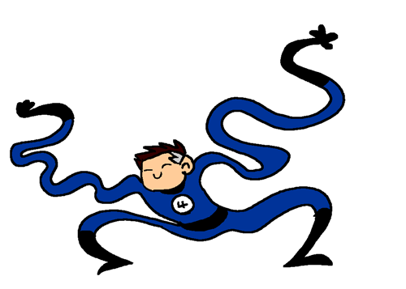

I am the founder of the Fantastic Four! I have a mastery of mechanical,
aerospace and electrical engineering, chemistry, all levels of physics, and human and alien biology.
I one of the top ten most intelligent super heros of all time! I gained the power of elasticity from irradiation by cosmic rays.
I have the ability to convert his entire body into a highly malleable state at will, allowing me to stretch, deform, and reform myself into virtually any shape! Some of the villians we have defeated are:
Mole Man, the Skrulls, Namor the Sub-Mariner, Doctor Doom, the Puppet Master, Blastaar, the Frightful Four, Annihilus, Galactus, Klaw and many more!

Before becoming Mister Fantasic
I was born in Central City, California, I am the son of Evelyn and Nathaniel Richards. My dad was a scientific genius, and I inherited a similar level of intellect and interests. I was what you could call a child prodigy. With a special aptitude in mathematics, physics, and mechanics, Reed Richards was taking college-level courses when he was 14.
I attended several prestigious universities such as Massachusetts Institute of Technology, California Institute of Technology, Harvard University, Columbia University, and Empire State University. By the age of 20, I had several degrees in the sciences under my belt.
Moving on to Harvard, I earned Ph.D.s in Physics and Electrical Engineering while working as a military scientist, all this by the age of 22. I also worked in communications for the Army. Three years later, in his mid-20s, Reed used his inheritance, along with government funding, to finance my research.
Then one fateful mission which had myself, Susan Storm, Johnny Storm and Ben Grimm. When our ship passed through the Van Allen belt a radiation belt. Which hit us with a cosmic radiation. That would give us all the powers that we have today and make us The Fantastic Four!
About Jason
My name is Jason Tipp. I am a 2nd year GIMM student. I was born in Chicago then moved to Kirkland Washington when I was 3. Some of my favorite activities are skiing and playing tennis.
Both of which I also started at the age of 3. I love the outdoors, but I have a huge passion for video games! I think this love started when I got lego star wars for the game cube. Then getting Lego Starwars the Complete Saga changed my world!
I remember my friends and I would come over to my house and just play it for hours and hours. I would later get more and more invested into video games. I would watch people play these games on YouTube. I really enjoy it and got a lot of laughes out of them!
I ended up getting most of these games that people would play just because I got so much enjoyment watching them. This is what got me into Halo Minecraft and Call of Duty.